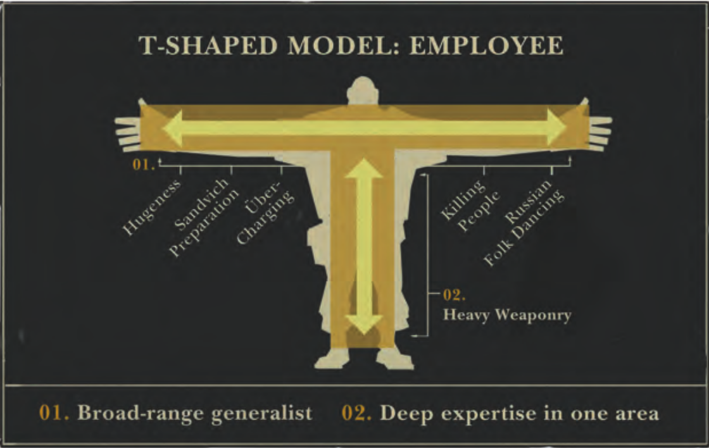
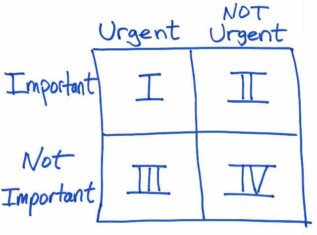

Advice From the Trenches & Bootcamp Graduate Stories
Chris Oakman
@oakmac1
chrisoakman.com
Chris Oakman
@oakmac1
chrisoakman.com


Leverage your background!
"Working on the wrong thing for a month is equivalent to not showing up to work for a month at all."
"Their [software developers] principal work is human communication to organize the user's expressions of needs into formal procedure."
Work somewhere where the quality of the software effects the bottom line.

"Tell them that they'll be ok. To find a healthy way to unplug. For every 4 days of getting nowhere, you'll earn 1 day of breakthrough. And it will absolutely be worth the risk and effort it cost no matter how long it takes to realize it."
Chris Oakman
@oakmac1
chrisoakman.com